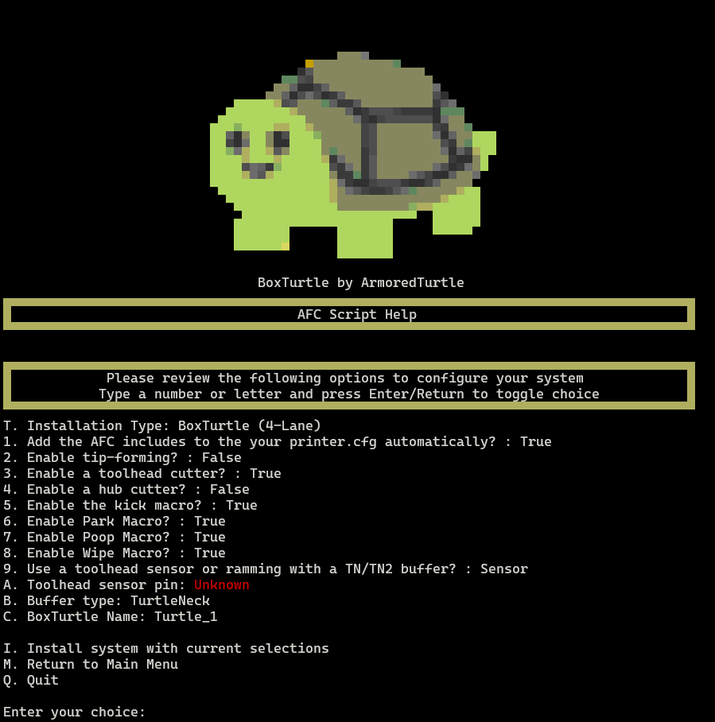

Install Menu
Menu Overview¶

The Installation menu is used for the initial configuration of your system and will walk you through a guided menu
in order to help you configure your system properly. As with previous menus, this menu is designed in two sections.
The top section of the manual has a section labeled as AFC Script Help. This is a dynamic section that will provide
feedback during the process on various options that you choose.
Messages will appear in this section to help guide you through the process and provide visual feedback on the options you have selected.
Menu Options¶
Tip
As with other menus, the options available in the Installation menu are dynamic and will change based on the
state of your system and the other options you choose.
T. Installation Type¶
This option will allow you to select the type of installation you wish to perform. The currently available options available are:
- BoxTurtle (4-Lane)
- NightOwl
1. Printer.cfg Configuration¶
This boolean is used to automatically include the necessary [include AFC/*.cfg] to your printer.cfg file. This
defaults to true and is recommended to be left as such.
2. Tip-forming¶
This boolean is used to enable or disable the tip-forming functions. This defaults to false as the recommended
setup is to use a toolhead cutter and tip-forming may be unnecessary. If tip-forming is enabled, ensure that the
options in the ~/printer_data/config/AFC/AFC.cfg file are set correctly.
Once set, this option can be changed via editing the AFC.cfg file typically located in the
~/printer_data/config/AFC directory.
3. Enable a toolhead cutter¶
This boolean is used to enable or disable the toolhead cutter. This defaults to true as the recommended setup
is to use a toolhead cutter. If the toolhead cutter is enabled, ensure that the options in the
~/printer_data/config/AFC/AFC.cfg file are set correctly.
Once set, this option can be changed via editing the AFC.cfg file typically located in the
~/printer_data/config/AFC directory.
4. Enable a hub cutter¶
This boolean is used to enable or disable the hub cutter. Hub cutters are a remote filament cutter not
co-located with the toolhead. Examples of this include user mods such as Snappy and other EREC based mods. This
defaults to false as the recommended setup is to use a toolhead cutter. If the hub cutter is enabled, ensure that
the options in the ~/printer_data/config/AFC/AFC.cfg file are set correctly.
Once set, this option can be changed via editing the AFC.cfg file typically located in the
~/printer_data/config/AFC directory.
5. Kick Macro¶
This boolean is used to enable or disable the kick macro. This defaults to true. If the kick macro is enabled,
ensure that the options in the ~/printer_data/config/AFC/AFC_macro_vars.cfg file are set correctly.
Once set, this option can be changed via editing the AFC.cfg file typically located in the
~/printer_data/config/AFC directory. Variables for this macro are located in the AFC_macro_vars.cfg file.
6. Park Macro¶
This boolean is used to enable or disable the park macro. This defaults to true. If the park macro is enabled,
ensure that the options in the ~/printer_data/config/AFC/AFC_macro_vars.cfg file are set correctly.
Once set, this option can be changed via editing the AFC.cfg file typically located in the
~/printer_data/config/AFC directory. Variables for this macro are located in the AFC_macro_vars.cfg file.
7. Poop Macro¶
This boolean is used to enable or disable the poop macro. This defaults to true. If the poop macro is enabled,
ensure that the options in the ~/printer_data/config/AFC/AFC_macro_vars.cfg file are set correctly.
Once set, this option can be changed via editing the AFC.cfg file typically located in the
~/printer_data/config/AFC directory. Variables for this macro are located in the AFC_macro_vars.cfg file.
8. Wipe Macro¶
This boolean is used to enable or disable the wipe macro. This defaults to true. If the wipe macro is enabled,
ensure that the options in the ~/printer_data/config/AFC/AFC_macro_vars.cfg file are set correctly.
Once set, this option can be changed via editing the AFC.cfg file typically located in the
~/printer_data/config/AFC directory. Variables for this macro are located in the AFC_macro_vars.cfg file.
9. Toolhead sensor or Ramming¶
This boolean is used to select the usage of a toolhead filament sensor, or ramming with a filament buffer such as
Turtleneck or Turtleneck Pro.
A. Toolhead Sensor Pin¶
This option is used to select the pin that the toolhead sensor is connected to. This should be input in the
format of mcu:pin such as nhk:gpio13 or ebb:pa4. Ensure that you use the proper pin for your specific
system. A pull-up ^ may be required in front of the pin if you experience intermittent issues with the sensor.
Note
This option will only appear if the Toolhead sensor or Ramming option is set to Sensor.
B. Buffer Type¶
This option is used to select the buffer type that you are using. The currently available options are:
- Turtleneck
- TurtleneckV2 (Pro)
- None
Warning
The use of a filament is HIGHLY recommended. If you are not using a buffer, select None.
I. Install system¶
Once you select I. Install system with current selections, depending on the options you have selected, you may be
prompted for more information.
Examples of this would be based on your choice of a Buffer. If you have selected a buffer, you will be prompted for
the advance and trailing pins. The defaults presented for these options correspond to the recommended settings
per the wiring diagrams for the BoxTurtle system.
Warning
If you are using a different system, ensure that you have the proper wiring diagrams for your system and adjust these settings accordingly.
If you are connected to a AFC-Lite board, ensure you use a pull-up ^ in front of the pin for the buffer.
M. Return to Main Menu¶
Select this option to return to the main menu.
Q. Quit¶
Select this option to exit the AFC script.
Post installation¶
Once you have completed the installation, you will notice some information in the AFC Script Help section. This
information will be based on the options you have selected, but information similar to the below will be present:
- AFC Configuration updated with selected options at /home/pi/printer_data/config/AFC/AFC.cfg
- AFC-Klipper-Add-On python extensions installed to /home/pi/klipper/klippy/extras/
- Ensure you enter either your CAN bus or serial information in the /home/pi/printer_data/config/AFC/AFC_Turtle_1.cfg file
You may now quit the script or return to the main menu.
Warning
Prior to restarting Klipper, ensure you check the files indicated above and modify them as necessary.
Mandatory configuration changes are located here and must be changed / checked. You WILL experience Klipper warnings if you do not modify these settings.